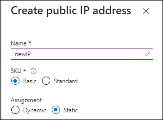

Versionshinweise
Versionshinweise
Bereiten Sie die Bereitstellung im privaten Modus vor
 Änderungen vorschlagen
Änderungen vorschlagen
Bereiten Sie Ihre Umgebung vor der Implementierung von BlueXP im privaten Modus vor. Sie müssen beispielsweise die Hostanforderungen prüfen, das Netzwerk vorbereiten, Berechtigungen einrichten und vieles mehr.

|
Wenn Sie BlueXP in der verwenden möchten "AWS Secret Cloud" Oder im "Top Secret Cloud von AWS"Dann sollten Sie separate Anweisungen befolgen, um in diesen Umgebungen zu beginnen. "Erste Schritte mit Cloud Volumes ONTAP – in der AWS Secret Cloud oder Top Secret Cloud" |
Schritt 1: Verstehen, wie der private Modus funktioniert
Bevor Sie beginnen, sollten Sie sich ein Bild davon machen, wie BlueXP im privaten Modus funktioniert.
Sie sollten beispielsweise verstehen, dass Sie die browserbasierte Oberfläche verwenden müssen, die lokal über den BlueXP Connector verfügbar ist, die Sie installieren müssen. Der Zugriff auf BlueXP erfolgt nicht über die webbasierte Konsole, die über die SaaS-Schicht bereitgestellt wird.
Außerdem sind nicht alle BlueXP Services verfügbar.
Schritt 2: Überprüfen Sie die Installationsoptionen
Im privaten Modus können Sie den Connector vor Ort oder in der Cloud installieren, indem Sie den Connector manuell auf Ihrem eigenen Linux-Host installieren.
Wenn Sie ein Cloud Volumes ONTAP-System in Google Cloud erstellen möchten, muss der Connector in Google Cloud ausgeführt werden—er kann nicht lokal ausgeführt werden.
Schritt 3: Überprüfen Sie die Host-Anforderungen
Die Connector-Software muss auf einem Host ausgeführt werden, der bestimmte Betriebssystemanforderungen, RAM-Anforderungen, Port-Anforderungen usw. erfüllt.
- Dedizierter Host
-
Der Connector wird nicht auf einem Host unterstützt, der für andere Anwendungen freigegeben ist. Der Host muss ein dedizierter Host sein.
- Unterstützte Betriebssysteme
-
-
Ubuntu 22.04 LTS
-
CentOS 7.6, 7.7, 7.8 und 7.9
-
Red hat Enterprise Linux 7.6, 7.7, 7.8 und 7.9
Der Host muss bei Red hat Subscription Management registriert sein. Wenn er nicht registriert ist, kann der Host während der Connector-Installation nicht auf Repositorys zugreifen, um erforderliche Drittanbietersoftware zu aktualisieren.
Der Connector wird auf Englisch-sprachigen Versionen dieser Betriebssysteme unterstützt.
-
- Hypervisor
-
Ein Bare-Metal- oder Hosted-Hypervisor, der für Ubuntu, CentOS oder Red hat Enterprise Linux zertifiziert ist, ist erforderlich.
- CPU
-
4 Kerne oder 4 vCPUs
- RAM
-
14 GB
- Instanztyp für AWS EC2
-
Einen Instanztyp, der die oben aufgeführten CPU- und RAM-Anforderungen erfüllt. Wir empfehlen t3.xlarge.
- Azure VM-Größe
-
Einen Instanztyp, der die oben aufgeführten CPU- und RAM-Anforderungen erfüllt. Wir empfehlen DS3 v2.
- Google Cloud-Maschinentyp
-
Einen Instanztyp, der die oben aufgeführten CPU- und RAM-Anforderungen erfüllt. Wir empfehlen n2-Standard-4.
Der Connector wird in Google Cloud auf einer VM-Instanz mit einem unterstützten Betriebssystem unterstützt "Geschirmte VM-Funktionen"
- Speicherplatz in /opt
-
100 gib Speicherplatz muss verfügbar sein
- Festplattenspeicher in /var
-
20 gib Speicherplatz muss verfügbar sein
- Docker Engine
-
Docker Engine Version 19.3.1 oder höher ist auf dem Host erforderlich, bevor Sie den Connector installieren. "Installationsanweisungen anzeigen"
Schritt 4: Vernetzung für den Connector vorbereiten
Richten Sie Ihr Netzwerk ein, damit der Connector Ressourcen und Prozesse innerhalb Ihrer Public Cloud-Umgebung managen kann. Abgesehen von einem virtuellen Netzwerk und einem Subnetz für den Connector müssen Sie sicherstellen, dass die folgenden Anforderungen erfüllt sind.
- Verbindungen zu Zielnetzwerken
-
Der Connector muss über eine Netzwerkverbindung zu dem Speicherort verfügen, an dem Sie Speicher verwalten möchten. Beispielsweise die VPC oder vnet, bei der Sie Cloud Volumes ONTAP implementieren möchten, oder das Datacenter, in dem sich Ihre ONTAP-Cluster vor Ort befinden.
- Endpunkte für den täglichen Betrieb
-
Der Connector kontaktiert die folgenden Endpunkte, um Ressourcen und Prozesse in der Public Cloud-Umgebung zu managen.
Endpunkte Zweck AWS-Services (amazonaws.com):
-
CloudFormation
-
Elastic Compute Cloud (EC2)
-
Identitäts- und Zugriffsmanagement (Identity and Access Management, IAM)
-
Key Management Service (KMS)
-
Security Token Service (STS)
-
Simple Storage Service (S3)
Managen von Ressourcen in AWS. Der genaue Endpunkt hängt von der von Ihnen verwendeten AWS-Region ab. "Details finden Sie in der AWS-Dokumentation"
https://management.azure.com
https://login.microsoftonline.com
https://blob.core.windows.net
https://core.windows.netFür das Managen von Ressourcen in Azure Public Regionen.
https://management.azure.microsoft.scloud
https://login.microsoftonline.microsoft.scloud
https://blob.core.microsoft.scloud
https://core.microsoft.scloudZum Managen von Ressourcen in der Region Azure-IL6.
https://management.chinacloudapi.cn
https://login.chinacloudapi.cn
https://blob.core.chinacloudapi.cn
https://core.chinacloudapi.cnFür das Management von Ressourcen in Azure China Regionen.
https://www.googleapis.com/compute/v1/
https://compute.googleapis.com/compute/v1
https://cloudresourcemanager.googleapis.com/v1/projects
https://www.googleapis.com/compute/beta
https://storage.googleapis.com/storage/v1
https://www.googleapis.com/storage/v1
https://iam.googleapis.com/v1
https://cloudkms.googleapis.com/v1
https://www.googleapis.com/deploymentmanager/v2/projectsZum Managen von Ressourcen in Google Cloud.
-
- Öffentliche IP-Adresse in Azure
-
Wenn Sie eine öffentliche IP-Adresse mit der Connector-VM in Azure verwenden möchten, muss die IP-Adresse eine Basis-SKU verwenden, um sicherzustellen, dass BlueXP diese öffentliche IP-Adresse verwendet.

Wenn Sie stattdessen eine Standard-SKU-IP-Adresse verwenden, verwendet BlueXP anstelle der öffentlichen IP die private IP-Adresse des Connectors. Wenn die Maschine, die Sie für den Zugriff auf die BlueXP-Konsole nutzen, keinen Zugriff auf diese private IP-Adresse hat, dann schlagen Aktionen aus der BlueXP-Konsole fehl.
- Proxy-Server
-
Wenn Ihr Unternehmen die Bereitstellung eines Proxy-Servers für den gesamten ausgehenden Internet-Datenverkehr erfordert, erhalten Sie die folgenden Informationen zu Ihrem HTTP- oder HTTPS-Proxy. Diese Informationen müssen Sie bei der Installation angeben.
-
IP-Adresse
-
Anmeldedaten
-
HTTPS-Zertifikat
Beachten Sie, dass BlueXP keine transparenten Proxy-Server unterstützt.
+
Im privaten Modus sendet BlueXP lediglich Outbound-Datenverkehr zu Ihrem Cloud-Provider, um ein Cloud Volumes ONTAP System zu erstellen. -
- Ports
-
Es gibt keinen eingehenden Datenverkehr zum Konnektor, es sei denn, Sie initiieren ihn.
HTTP (80) und HTTPS (443) bieten den Zugriff auf die BlueXP Konsole. SSH (22) ist nur erforderlich, wenn Sie eine Verbindung zum Host zur Fehlerbehebung herstellen müssen.
- Aktivieren Sie NTP
-
Wenn Sie Vorhaben, die BlueXP Klassifizierung zum Scannen von Unternehmensdatenquellen zu nutzen, sollten Sie sowohl auf dem BlueXP Connector-System als auch dem BlueXP Klassifizierungssystem einen Network Time Protocol (NTP)-Service aktivieren, damit die Zeit zwischen den Systemen synchronisiert wird. "Weitere Informationen zur BlueXP Klassifizierung"
Schritt 5: Cloud-Berechtigungen vorbereiten
Wenn Sie planen, Cloud Volumes ONTAP Systeme zu erstellen, erfordert BlueXP Berechtigungen von Ihrem Cloud-Provider. Sie müssen Berechtigungen in Ihrem Cloud-Provider einrichten und diese Berechtigungen dann der Connector-Instanz zuordnen, nachdem Sie sie installiert haben.
Um die erforderlichen Schritte anzuzeigen, wählen Sie die Authentifizierungsoption aus, die Sie für Ihren Cloud-Provider verwenden möchten.
Wenn Sie den Connector vor Ort installieren möchten, müssen Sie Berechtigungen über AWS Zugriffsschlüssel oder einen Azure Service-Prinzipal bereitstellen. Die anderen Optionen werden nicht unterstützt.
Verwenden Sie eine IAM-Rolle, um dem Connector Berechtigungen zu gewähren. Sie müssen die Rolle manuell an die EC2-Instanz für den Connector anhängen.
-
Melden Sie sich bei der AWS-Konsole an, und navigieren Sie zum IAM-Service.
-
Erstellen einer Richtlinie:
-
Wählen Sie Policies > Create Policy aus.
-
Wählen Sie JSON aus, kopieren Sie den Inhalt des "IAM-Richtlinie für den Connector".
-
Beenden Sie die verbleibenden Schritte, um die Richtlinie zu erstellen.
-
-
Erstellen einer IAM-Rolle:
-
Wählen Sie Rollen > Rolle erstellen.
-
Wählen Sie AWS-Service > EC2 aus.
-
Fügen Sie Berechtigungen hinzu, indem Sie die soeben erstellte Richtlinie anhängen.
-
Beenden Sie die verbleibenden Schritte, um die Rolle zu erstellen.
-
Sie haben jetzt eine IAM-Rolle für die EC2-Instanz des Connectors.
Richten Sie Berechtigungen und einen Zugriffsschlüssel für einen IAM-Benutzer ein. Sie müssen BlueXP nach der Installation des Connectors und der Einrichtung von BlueXP mit dem AWS-Zugriffsschlüssel bereitstellen.
-
Melden Sie sich bei der AWS-Konsole an, und navigieren Sie zum IAM-Service.
-
Erstellen einer Richtlinie:
-
Wählen Sie Policies > Create Policy aus.
-
Wählen Sie JSON aus, kopieren Sie den Inhalt des "IAM-Richtlinie für den Connector".
-
Beenden Sie die verbleibenden Schritte, um die Richtlinie zu erstellen.
Abhängig von den BlueXP Services, die Sie planen zu verwenden, müssen Sie möglicherweise eine zweite Richtlinie erstellen.
Für Standardregionen werden die Berechtigungen auf zwei Richtlinien verteilt. Zwei Richtlinien sind aufgrund einer maximal zulässigen Zeichengröße für gemanagte Richtlinien in AWS erforderlich. "Erfahren Sie mehr über IAM-Richtlinien für den Connector".
-
-
Fügen Sie die Richtlinien einem IAM-Benutzer hinzu.
-
Stellen Sie sicher, dass der Benutzer über einen Zugriffsschlüssel verfügt, den Sie nach der Installation des Connectors zu BlueXP hinzufügen können.
Das Konto verfügt nun über die erforderlichen Berechtigungen.
Erstellen einer benutzerdefinierten Azure-Rolle mit den erforderlichen Berechtigungen. Sie werden diese Rolle der Connector-VM zuweisen.
Beachten Sie, dass Sie eine benutzerdefinierte Azure-Rolle über das Azure-Portal, Azure PowerShell, Azure CLI oder REST-API erstellen können. Die folgenden Schritte zeigen, wie Sie die Rolle mithilfe der Azure-CLI erstellen. Wenn Sie eine andere Methode verwenden möchten, finden Sie weitere Informationen unter "Azure-Dokumentation"
-
Aktivieren Sie eine vom System zugewiesene gemanagte Identität auf der VM, bei der Sie den Connector installieren möchten, damit Sie die erforderlichen Azure-Berechtigungen über eine benutzerdefinierte Rolle bereitstellen können.
-
Kopieren Sie den Inhalt des "Benutzerdefinierte Rollenberechtigungen für den Konnektor" Und speichern Sie sie in einer JSON-Datei.
-
Ändern Sie die JSON-Datei, indem Sie dem zuweisbaren Bereich Azure-Abonnement-IDs hinzufügen.
Sie sollten für jedes Azure-Abonnement, das Sie mit BlueXP verwenden möchten, die ID hinzufügen.
Beispiel
"AssignableScopes": [ "/subscriptions/d333af45-0d07-4154-943d-c25fbzzzzzzz", "/subscriptions/54b91999-b3e6-4599-908e-416e0zzzzzzz", "/subscriptions/398e471c-3b42-4ae7-9b59-ce5bbzzzzzzz" -
Verwenden Sie die JSON-Datei, um eine benutzerdefinierte Rolle in Azure zu erstellen.
In den folgenden Schritten wird beschrieben, wie die Rolle mithilfe von Bash in Azure Cloud Shell erstellt wird.
-
Starten "Azure Cloud Shell" Und wählen Sie die Bash-Umgebung.
-
Laden Sie die JSON-Datei hoch.

-
Verwenden Sie die Azure CLI, um die benutzerdefinierte Rolle zu erstellen:
az role definition create --role-definition Connector_Policy.json
-
Sie sollten nun eine benutzerdefinierte Rolle namens BlueXP Operator haben, die Sie der virtuellen Connector-Maschine zuweisen können.
Ein Service-Principal in der Microsoft Entra ID erstellen und einrichten, um die für BlueXP erforderlichen Azure Zugangsdaten zu erhalten. Sie müssen BlueXP nach der Installation des Connectors und der Einrichtung von BlueXP über diese Zugangsdaten informieren.
-
Stellen Sie sicher, dass Sie in Azure über die Berechtigungen zum Erstellen einer Active Directory-Anwendung und zum Zuweisen der Anwendung zu einer Rolle verfügen.
Weitere Informationen finden Sie unter "Microsoft Azure-Dokumentation: Erforderliche Berechtigungen"
-
Öffnen Sie im Azure-Portal den Dienst Microsoft Entra ID.

-
Wählen Sie im Menü App-Registrierungen.
-
Wählen Sie Neue Registrierung.
-
Geben Sie Details zur Anwendung an:
-
Name: Geben Sie einen Namen für die Anwendung ein.
-
Kontotyp: Wählen Sie einen Kontotyp aus (jeder kann mit BlueXP verwendet werden).
-
Redirect URI: Sie können dieses Feld leer lassen.
-
-
Wählen Sie Registrieren.
Sie haben die AD-Anwendung und den Service-Principal erstellt.
-
Erstellen einer benutzerdefinierten Rolle:
Beachten Sie, dass Sie eine benutzerdefinierte Azure-Rolle über das Azure-Portal, Azure PowerShell, Azure CLI oder REST-API erstellen können. Die folgenden Schritte zeigen, wie Sie die Rolle mithilfe der Azure-CLI erstellen. Wenn Sie eine andere Methode verwenden möchten, finden Sie weitere Informationen unter "Azure-Dokumentation"
-
Kopieren Sie den Inhalt des "Benutzerdefinierte Rollenberechtigungen für den Konnektor" Und speichern Sie sie in einer JSON-Datei.
-
Ändern Sie die JSON-Datei, indem Sie dem zuweisbaren Bereich Azure-Abonnement-IDs hinzufügen.
Sie sollten die ID für jedes Azure Abonnement hinzufügen, aus dem Benutzer Cloud Volumes ONTAP Systeme erstellen.
Beispiel
"AssignableScopes": [ "/subscriptions/d333af45-0d07-4154-943d-c25fbzzzzzzz", "/subscriptions/54b91999-b3e6-4599-908e-416e0zzzzzzz", "/subscriptions/398e471c-3b42-4ae7-9b59-ce5bbzzzzzzz" -
Verwenden Sie die JSON-Datei, um eine benutzerdefinierte Rolle in Azure zu erstellen.
In den folgenden Schritten wird beschrieben, wie die Rolle mithilfe von Bash in Azure Cloud Shell erstellt wird.
-
Starten "Azure Cloud Shell" Und wählen Sie die Bash-Umgebung.
-
Laden Sie die JSON-Datei hoch.
-
Verwenden Sie die Azure CLI, um die benutzerdefinierte Rolle zu erstellen:
az role definition create --role-definition Connector_Policy.jsonSie sollten nun eine benutzerdefinierte Rolle namens BlueXP Operator haben, die Sie der virtuellen Connector-Maschine zuweisen können.
-
-
-
Applikation der Rolle zuweisen:
-
Öffnen Sie im Azure-Portal den Service Abonnements.
-
Wählen Sie das Abonnement aus.
-
Wählen Sie Zugriffskontrolle (IAM) > Hinzufügen > Rollenzuweisung hinzufügen.
-
Wählen Sie auf der Registerkarte role die Rolle BlueXP Operator aus und wählen Sie Next aus.
-
Führen Sie auf der Registerkarte Mitglieder die folgenden Schritte aus:
-
Benutzer, Gruppe oder Serviceprincipal ausgewählt lassen.
-
Wählen Sie Mitglieder auswählen.

-
Suchen Sie nach dem Namen der Anwendung.
Hier ein Beispiel:

-
Wählen Sie die Anwendung aus und wählen Sie Select.
-
Wählen Sie Weiter.
-
-
Wählen Sie Überprüfen + Zuweisen.
Der Service-Principal verfügt jetzt über die erforderlichen Azure-Berechtigungen zur Bereitstellung des Connectors.
Wenn Sie Cloud Volumes ONTAP aus mehreren Azure Subscriptions bereitstellen möchten, müssen Sie den Service-Prinzipal an jedes dieser Subscriptions binden. Mit BlueXP können Sie das Abonnement auswählen, das Sie bei der Bereitstellung von Cloud Volumes ONTAP verwenden möchten.
-
-
Wählen Sie im Microsoft Entra ID-Dienst App-Registrierungen aus und wählen Sie die Anwendung aus.
-
Wählen Sie API-Berechtigungen > Berechtigung hinzufügen.
-
Wählen Sie unter Microsoft APIs Azure Service Management aus.

-
Wählen Sie Zugriff auf Azure Service Management als Benutzer der Organisation und dann Berechtigungen hinzufügen.

-
Wählen Sie im Microsoft Entra ID-Dienst App-Registrierungen aus und wählen Sie die Anwendung aus.
-
Kopieren Sie die Application (Client) ID und die Directory (Tenant) ID.

Wenn Sie das Azure-Konto zu BlueXP hinzufügen, müssen Sie die Anwendungs-ID (Client) und die Verzeichnis-ID (Mandant) für die Anwendung angeben. BlueXP verwendet die IDs, um sich programmatisch anzumelden.
-
Öffnen Sie den Dienst Microsoft Entra ID.
-
Wählen Sie App-Registrierungen und wählen Sie Ihre Anwendung aus.
-
Wählen Sie Zertifikate & Geheimnisse > Neues Kundengeheimnis.
-
Geben Sie eine Beschreibung des Geheimnisses und eine Dauer an.
-
Wählen Sie Hinzufügen.
-
Kopieren Sie den Wert des Clientgeheimnisses.

Jetzt haben Sie einen Client-Schlüssel, den BlueXP zur Authentifizierung mit Microsoft Entra ID verwenden kann.
Ihr Service-Principal ist jetzt eingerichtet und Sie sollten die Anwendungs- (Client-)ID, die Verzeichnis- (Mandanten-)ID und den Wert des Clientgeheimnisses kopiert haben. Sie müssen diese Informationen in BlueXP eingeben, wenn Sie ein Azure-Konto hinzufügen.
Erstellen Sie eine Rolle und wenden Sie sie auf ein Servicekonto an, das Sie für die VM-Instanz des Connectors verwenden werden.
-
Benutzerdefinierte Rolle in Google Cloud erstellen:
-
Erstellen Sie eine YAML-Datei, die die in definierten Berechtigungen enthält "Connector-Richtlinie für Google Cloud".
-
Aktivieren Sie in Google Cloud die Cloud Shell.
-
Laden Sie die YAML-Datei hoch, die die erforderlichen Berechtigungen für den Connector enthält.
-
Erstellen Sie mithilfe von eine benutzerdefinierte Rolle
gcloud iam roles createBefehl.Im folgenden Beispiel wird auf Projektebene eine Rolle namens „Connector“ erstellt:
gcloud iam roles create connector --project=myproject --file=connector.yaml -
-
Erstellen Sie ein Servicekonto in Google Cloud:
-
Wählen Sie im IAM & Admin-Dienst Service-Konten > Service-Konto erstellen aus.
-
Geben Sie die Details des Servicekontos ein und wählen Sie Erstellen und Fortfahren.
-
Wählen Sie die gerade erstellte Rolle aus.
-
Beenden Sie die verbleibenden Schritte, um die Rolle zu erstellen.
-
Sie verfügen jetzt über ein Servicekonto, das Sie der VM-Instanz des Connectors zuweisen können.
Schritt 6: Google Cloud APIs aktivieren
Für die Implementierung von Cloud Volumes ONTAP in Google Cloud sind mehrere APIs erforderlich.
-
"Aktivieren Sie die folgenden Google Cloud APIs in Ihrem Projekt"
-
Cloud Deployment Manager V2-API
-
Cloud-ProtokollierungsAPI
-
Cloud Resource Manager API
-
Compute Engine-API
-
IAM-API (Identitäts- und Zugriffsmanagement
-
KMS-API (Cloud Key Management Service)
(Nur erforderlich, wenn Sie BlueXP Backup und Recovery mit vom Kunden gemanagten Verschlüsselungsschlüsseln (CMEK) verwenden möchten).
-